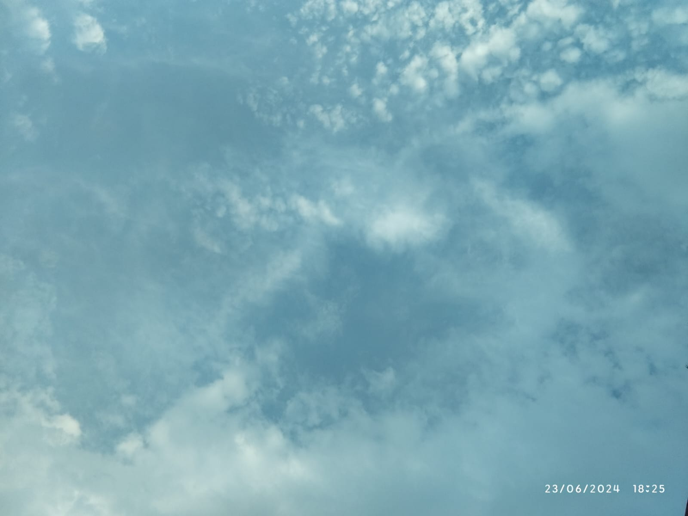

Sky + dreams + future
Every dream begins as something we cannot yet touch.
Story
The sky has always had a strange way of making everything feel possible. Maybe because it reminds us that there is always more beyond what we can currently see.
Reflection
I simply love looking at the open sky.
It reminds me of freedom.. the endless possibilities.
Sometimes, it makes your heart feel so big that it
feels as if the whole world could fit inside it.
Look up. There is always more ahead.